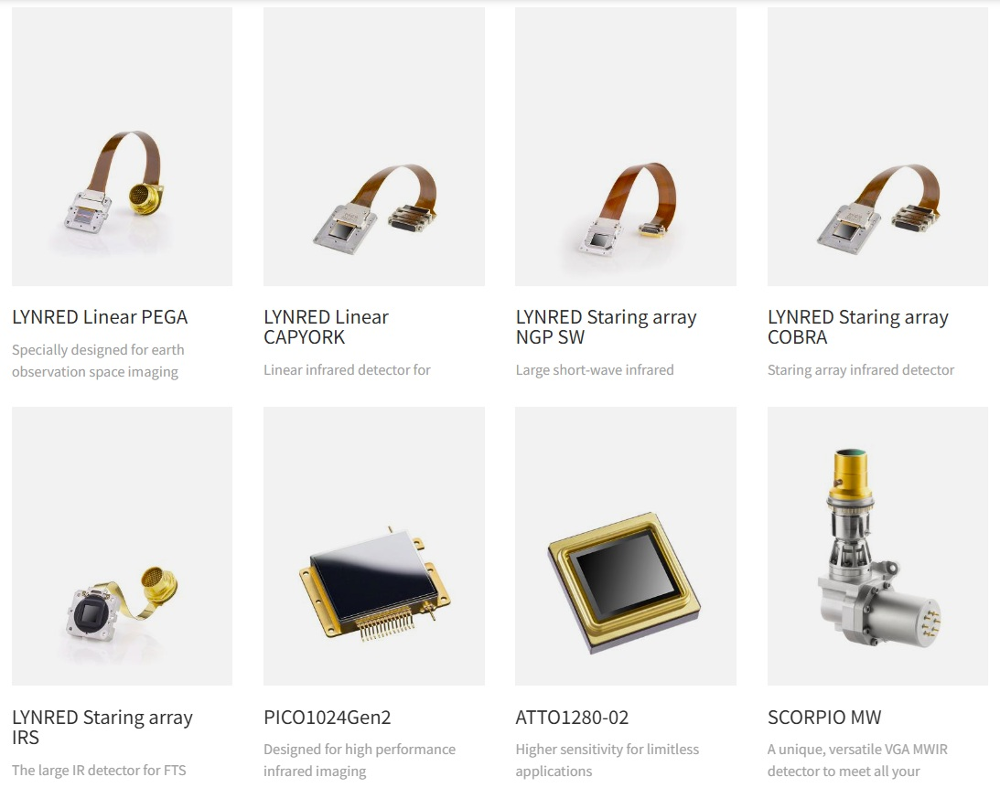

厳選ニュース / 活用トピックス
01.【安全保障】富士通、世界初「100万画素超 2波長T2SL赤外線センサー」を防衛装備庁へ納品完了 (2026年3月27日)
防衛装備庁の研究試作委託を受け、中赤外と遠赤外の2波長を1素子で同時検出できる100万画素超のType-II超格子（T2SL）センサを納品しました。
なぜ重要か：
- 極超音速兵器の微弱熱を捕捉： 変則軌道で高速飛翔するミサイルの排気熱（赤外線プルーム）を、雲や地表の反射ノイズから瞬時に分離・追尾できます。
- 国産宇宙防衛センサの確立： 海外依存を脱却し、高い耐放射線性を持つ超高精細FPAの国内調達・即応体制を実現します。
02.【宇宙障害】気象衛星「ひまわり9号」障害で露呈した赤外線センサの「極低温冷却待ち」 (2025年10月12日)
「ひまわり9号」の地上画像配信途絶に伴う8号への待機切り替え時、可視光画像が約8時間で復旧した一方、赤外線センサは「素子の極低温再冷却」に長時間を要し復旧が大幅に遅延しました。
なぜ重要か：
- 宇宙熱観測の宿命的ボトルネック： 微弱な赤外線を測るための絶対零度近傍への物理冷却プロセスが、軌道上インフラの即時復旧における最大の障害と判明しました。
- 高動作温度（HOT）化の必然性： 冷却待ちによる観測空白を最小化するため、より高温で動作するセンサ素子や高効率クライオクーラーの実装が急務です。
03.【環境監視】「いぶきGW」搭載TANSO-3が短波長赤外（SWIR）による全球温室効果ガスの面観測に成功 (2025年8月8日)
H-IIAロケットで打ち上げられた「いぶきGW」搭載のTANSO-3がファーストライトに成功し、短波長赤外（SWIR）反射光による高精度分光イメージングを開始しました。
なぜ重要か：
- 「点」から「面」への監視進化： 従来の単一ポイント観測から広域面イメージングへと刷新され、都市や個別の大規模排出源をピンポイントで可視化できます。
- 国際的な脱炭素監査を担保： CO2およびメタン（CH4）の全球濃度分布を高分解能で把握し、各国の排出削減実効性を客観的に検証します。
04.【防災監視】コロンビア政府×独OroraTechが小型熱赤外（TIR）衛星群による山火事即時監視網を稼働 (2025年11月10日)
コロンビア政府は独OroraTechと連携し、超小型衛星群に搭載した熱赤外線センサにより全国の森林火災をリアルタイム監視するプログラムを正式稼働させました。
なぜ重要か：
- 30分間隔の高頻度再訪： 従来の大型衛星（1日1回）の死角を突く低軌道コンステレーションにより、発火直後の極初期段階で熱源を捉えられます。
- 初期消火の迅速化とコスト圧縮： 超小型キューブサットに低コスト熱赤外カメラを多数分散搭載し、大規模森林火災の延焼を未然に防ぎます。
05.【安全保障】H3初号機失敗による赤外線センサ喪失が防衛省のコンステレーション移行を加速 (2023年3月7日)
防衛省がミサイル発射探知実証用に開発した2波長赤外線センサが「だいち3号」と共に海中へ水没したことを機に、早期警戒体制の抜本的見直しが行われました。
なぜ重要か：
- 単一障害点（SPOF）の排除： 大型衛星1基に高額センサを集中搭載する脆弱性を脱し、数十〜数百基規模の小型分散型コンステレーションへ舵を切りました。
- 宇宙監視網の抗堪性確立： 打上げ失敗や攻撃リスクに対し、一部のセンサが失われても監視網全体が機能し続ける冗長性を確保します。
06.【気象インフラ】次期気象衛星「ひまわり10号」に米L3Harris製「先進赤外サウンダ」が正式搭載決定 (2023年7月12日)
2029年度運用開始予定の「ひまわり10号」に、大気の鉛直構造を精密測定する米L3Harris Technologies製の干渉型赤外分光計の搭載が決定しました。
なぜ重要か：
- 水蒸気の3次元立体把握： 従来の雲頂温度撮像にとどまらず、地上から上層までの温度・湿度を15分間隔で立体的に測定可能になります。
- 線状降水帯予測の飛躍的向上： 豪雨をもたらす下層水蒸気の急激な流入を宇宙から捉え、水害避難のリードタイムを大幅に拡大します。
07.【超小型化】福井大×アークエッジが270gの極小ハイパースペクトルカメラで軌道上観測を実証 (2025年11月5日)
福井大学とアークエッジ・スペースは、線形可変フィルタ（LVF）を用いて重量約270gまで極限小型化した分光カメラを6U衛星「AE2a」に搭載し、宇宙からの地表観測に成功しました。
なぜ重要か：
- SWaP-Cのブレイクスルー： 重厚な光学プリズムを排し、超小型衛星へそのまま組み込める超軽量・低消費電力設計を確立しました。
- 赤外多波長コンステレーションへの道： 産業用光学部品と特殊薄膜フィルタを融合させることで、衛星群の大量・低コスト製造を実現します。
08.【米安全保障】米宇宙開発庁（SDA）が極超音速追尾用低軌道赤外線網「Tracking Layer」を本格拡大 (2025年12月19日)
米宇宙開発庁（SDA）は拡散型宇宙アーキテクチャ（PWSA）において、広視野（WFOV）赤外線センサ衛星群のTranche 3（72基）を発注し、グローバル追尾網の構築を加速させています。
なぜ重要か：
- 水平線の死角を宇宙から無力化： 地上レーダーでは捕捉不能な低高度・超高速の極超音速滑空兵器（HGV）を、低軌道から常時見下ろして追尾します。
- 排気熱のリアルタイム多角探知： 複数の低軌道赤外線衛星が熱プルームを立体交差測定し、迎撃システムへ瞬時に射撃諸元を伝送します。
09.【深宇宙探査】NASA「ローマン宇宙望遠鏡」が宇宙最大となる3億画素赤外線アレイを軌道上初起動 (2026年8月31日)
Falcon Heavyで打ち上げられた次世代宇宙望遠鏡において、Teledyne製高感度センサ「H4RG-10」を18基結合した約3億画素の超巨大赤外線FPAが軌道上初起動に成功しました。
なぜ重要か：
- ハッブル比100倍以上の超広視野： 赤外線波長による全天サーベイの所要時間を従来の100分の1に圧縮し、暗黒エネルギー解明を劇的に加速します。
- メガピクセル集積技術の限界突破： 極低温下で数百ギガバイトの熱雑音と配線抵抗を極小化する宇宙FPA実装の金字塔を打ち立てました。
10.【民間分光】Carbon Mapper「Tanager-1」がプラント単位で温室効果ガス漏出をピンポイント特定 (2024年8月16日)
NASA JPL開発のSWIRハイパースペクトル分光計を搭載した民間衛星「Tanager-1」が、石油施設や埋立地からのメタン・CO2漏洩プルームを地上分解能約30mで特定する運用を本格化しました。
なぜ重要か：
- 個別バルブ単位の法的証拠力： 広域平均値しか測れなかった従来の限界を打破し、どの施設のどの設備が漏洩しているかを客観的に特定できます。
- カーボンクレジットの信頼性担保： メタン固有の赤外吸収ピークを数百バンドで精密測定し、企業の脱炭素宣言の実効性を客観証明します。
11.【超低軌道】米Albedoが高度320kmのVLEOから地上解像度2mの商用熱赤外線（LWIR）画像を提供 (2025年9月)
Albedo Space社は超低地球軌道（VLEO）を飛行する小型衛星「Clarity-1」を展開し、熱赤外線（LWIR）において航空写真に匹敵する地上分解能2mでの商用データ配信を開始しました。
なぜ重要か：
- 光学系を肥大化させない超解像： 軌道高度を半減させることで、大重量のレンズやクライオクーラーを積まずに小型衛星で極限解像度を達成しました。
- 都市・インフラの夜間常時診断： 夜間の防衛偵察に加え、工場稼働状況や都市熱アイランド、森林初期熱源を夜間でもクリアに監視可能です。
12.【オープンデータ】「MethaneSAT」が高感度赤外分光で広域微量メタンをGoogle Earth上に全面公開 (2024年3月4日)
環境防衛基金（EDF）等の衛星「MethaneSAT」は、独自開発の高感度赤外分光センサにより世界中の中小農業や分散油田からの逃散微量メタンを測定し、完全無償公開しています。
なぜ重要か：
- 見逃されていた排出の大半を網羅： 大規模事故だけでなく、世界全体の排出過半を占める中小施設の逃散排出を可視化し、規制逃れを防止します。
- 第三者による気候ガバナンス： オープンデータ化によって国際機関や市民社会が脱炭素遵守状況を直接監査できる枠組みを提供します。
ピックアップ製品・ソリューション
LYNRED 宇宙・極限環境対応 赤外線ディテクタ / 赤外線FPAモジュール
SWIRからVLWIRまで網羅し、過酷な宇宙空間で最高峰のS/N比・高耐放射線・長寿命を実現

なぜ重要か：
- 軌道上運用の信頼性極大化： 欧州宇宙機関（ESA）や各国の宇宙ミッションで実証済みの耐放射線性能と超低NETDにより、白キズ（ホットピクセル）を抑制し、長期間にわたり極微弱な熱・スペクトル情報を欠損なく捉え続けます[cite: 1, 3]。
現場課題への解決アプローチ：
- 高動作温度（HOT）化による冷却待機時間の極小化： 先進のHOT技術（130K〜150Kでの動作）と小型統合型クライオクーラー（IDCA）の採用により、冷却負荷を大幅低減[cite: 5, 6]。「ひまわり」事例のような待機系切り替え時の長大な再冷却待ちを解消し、即時復旧と連続観測体制を実現します。
- 宇宙放射線被ばく環境に強いT2SL / MCT構造： LEOやGEOを飛び交う高エネルギー荷電粒子に対し、最適化された結晶構造と欠陥抑制技術を適用。放射線被ばくによる白キズ（暗電流・RTSノイズ）増加を極限まで抑え[cite: 3, 6]、ミサイル追尾やガス分光での誤検知を根絶します。
- 超小型衛星コンステレーションへのSWaP-C最適化： 冷却型FPA（SXGA 7.5µmピッチ等）のモジュール超小型化に加え[cite: 6]、キューブサットに直接搭載可能な非冷却マイクロボロメータのラインナップも展開。打上げコストと電力を大幅に削減し、数十〜数百基規模の早期配備を支援します[cite: 1, 2]。
| 対応波長帯域 |
SWIR（1〜2.7µm）、MWIR（3〜5µm）、LWIR（8〜12µm）、VLWIR（15µm超）[cite: 2, 7] |
| 検出素子マテリアル |
MCT（HgCdTe）、Type-II超格子（T2SL）、InGaAs、非冷却マイクロボロメータ（a-Si / VOx）[cite: 5] |
| 解像度 / ピクセルピッチ |
640×512（VGA）〜 1280×1024（SXGA/HD） / 7.5µm 〜 15µmピッチ[cite: 3, 6] |
| 宇宙環境耐性 |
耐放射線性スクリーニング（Total Ionizing Dose: TID / SEE耐性）、ESA/CNES宇宙フライトヘリテージ実績多数[cite: 1] |
| 冷却パッケージ |
高動作温度（HOT）対応IDCAクライオクーラー / デュワー密閉アセンブリ / パッシブ放熱対応[cite: 5] |
| 主要アプリケーション |
極超音速滑空兵器（HGV）早期警戒追尾、温室効果ガス（メタン/CO2）広域分光、次世代気象サウンディング、森林火災早期検知[cite: 1, 5, 7] |